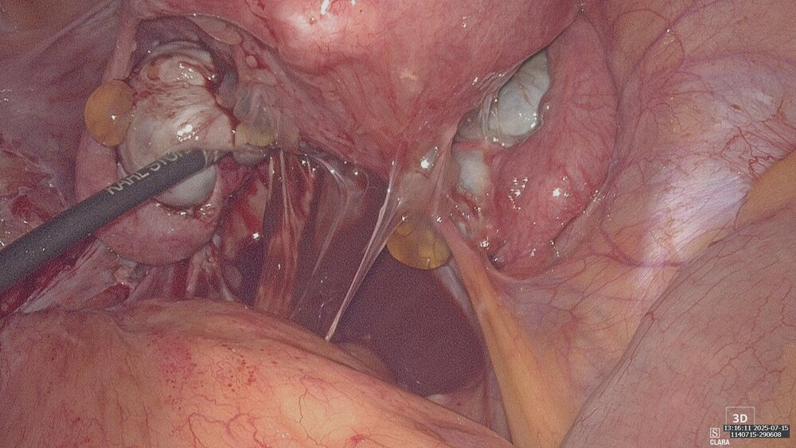
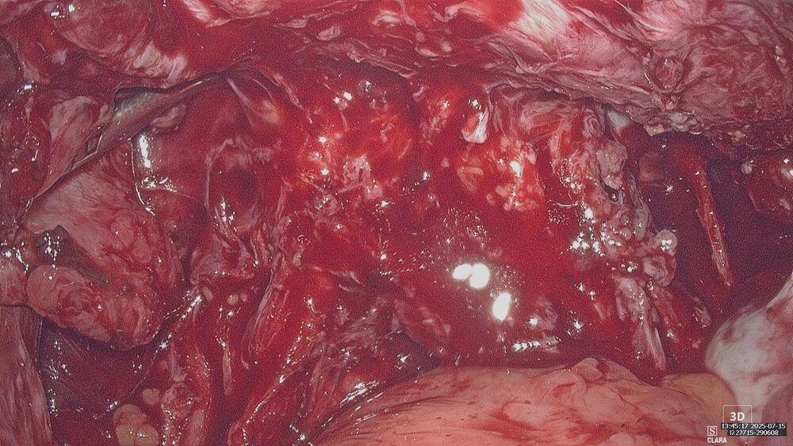
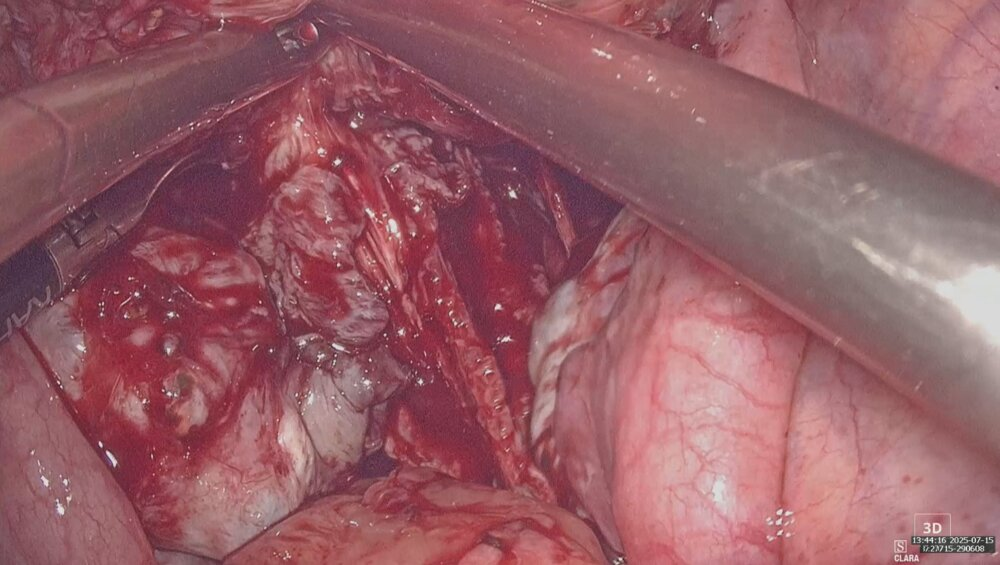
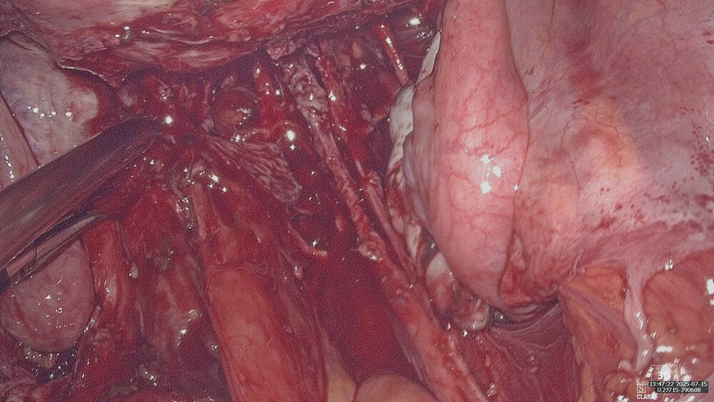
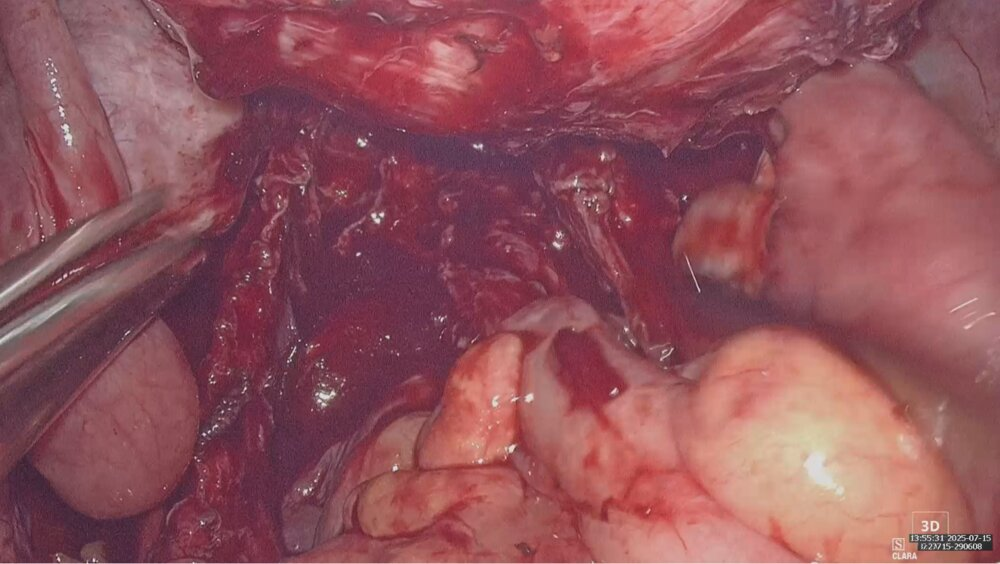
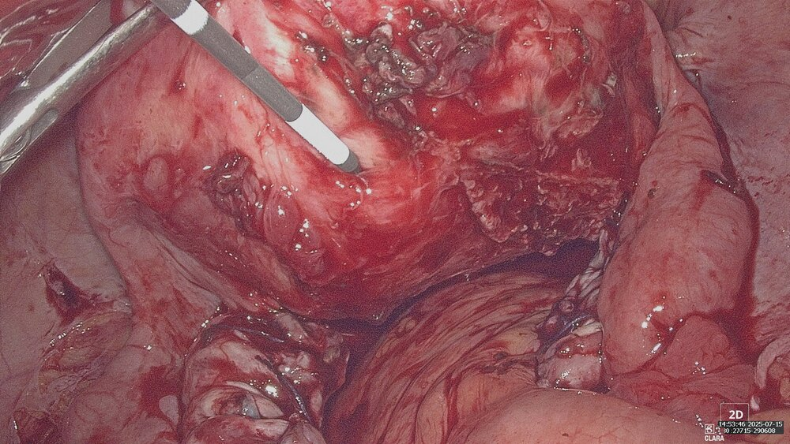
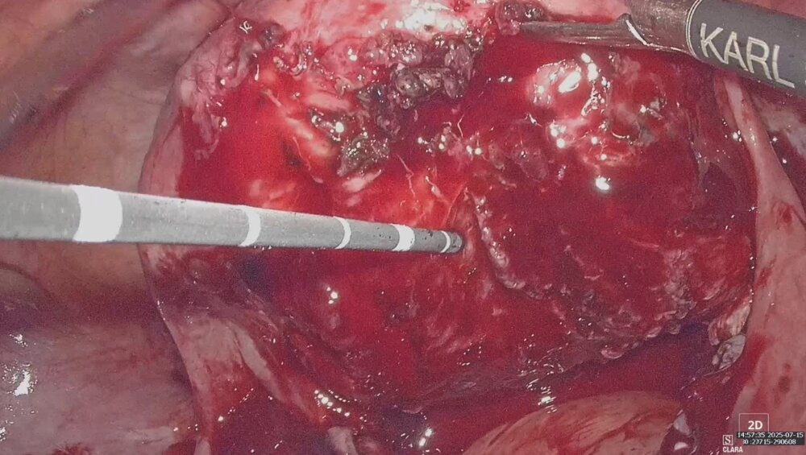
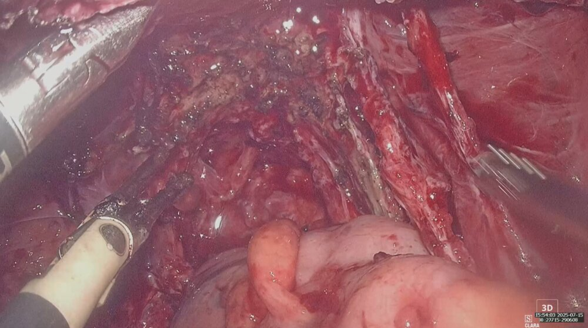
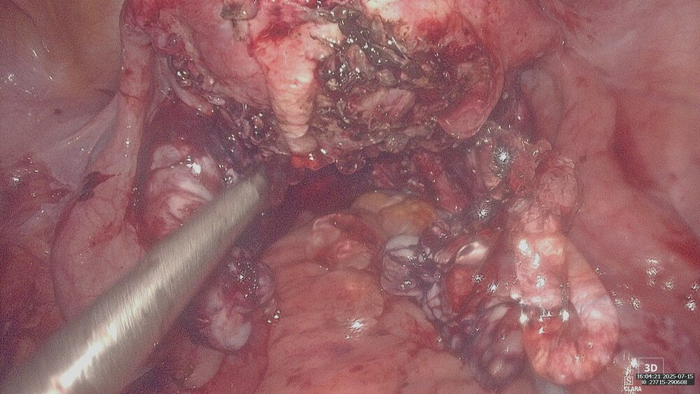

患者為 30 多歲女性，因嚴重經痛至門診就醫。超音波檢查發現後壁子宮肌腺症 5 公分，同時合併雙側巧克力囊腫及嚴重骨盆深層浸潤型子宮內膜異位（DIE），整個 Cul-de-sac（子宮直腸窩）完全沾黏。因患者有生育需求，葉醫師規劃以腹腔鏡一次完成四項手術：雙側巧克力囊腫切除、骨盆底沾黏分離、深層子宮內膜異位組織切除，以及肌腺瘤微波消融。
1
術前所見——嚴重子宮內膜異位合併骨盆腔沾黏
腹腔鏡下可見骨盆腔嚴重沾黏，子宮、腸道、卵巢之間大量沾黏組織，Cul-de-sac 完全閉塞，手術視野複雜，難度極高。

2
骨盆腔沾黏分離
沾黏分離是整台手術中最耗時、風險也最高的步驟。需一層一層仔細辨認正常組織與沾黏組織的界線，在不傷害腸道、輸尿管等重要器官的前提下，逐步鬆解沾黏。


3
直腸子宮及陰道沾黏分離
深層浸潤型子宮內膜異位最常侵犯的部位之一是子宮直腸窩，需將直腸與子宮之間、直腸與陰道後壁之間的沾黏完整分開，恢復正常的解剖結構，同時避免傷及直腸。


4
子宮肌腺瘤微波消融
骨盆腔沾黏分離完成後，針對後壁 5 公分肌腺症進行微波消融治療。與傳統切除相比，消融保留子宮肌層完整性，對有生育需求的患者更為合適。


5
深層浸潤型子宮內膜異位組織切除
將骨盆腔內殘存的深層浸潤型子宮內膜異位病灶一併切除，送病理化驗，以降低術後復發率，並改善患者的生育預後。

6
術後防沾黏處理
手術完成後，於骨盆腔內塗布防沾黏凝膠，降低術後再次沾黏的機率，有助於提升術後復原品質及生育預後。

💬
醫師說明
🔍 本案例的特殊挑戰
- 骨盆腔多處嚴重沾黏，Cul-de-sac 完全閉塞，手術視野受限
- 需同時保護直腸、輸尿管等重要器官不受損傷
- 患者有生育需求，手術策略需兼顧治療效果與子宮保留
- 四個術式合併一次完成，縮短患者需多次手術的負擔
葉醫師說明
這是一台難度非常高的複合手術。子宮內膜異位合併深層浸潤型病灶與嚴重沾黏，若分多次手術處理，患者需承受多次麻醉與恢復期的負擔。在技術許可的情況下，一次手術完整處理所有病灶，對有生育需求的患者來說，能提供最好的術後條件。